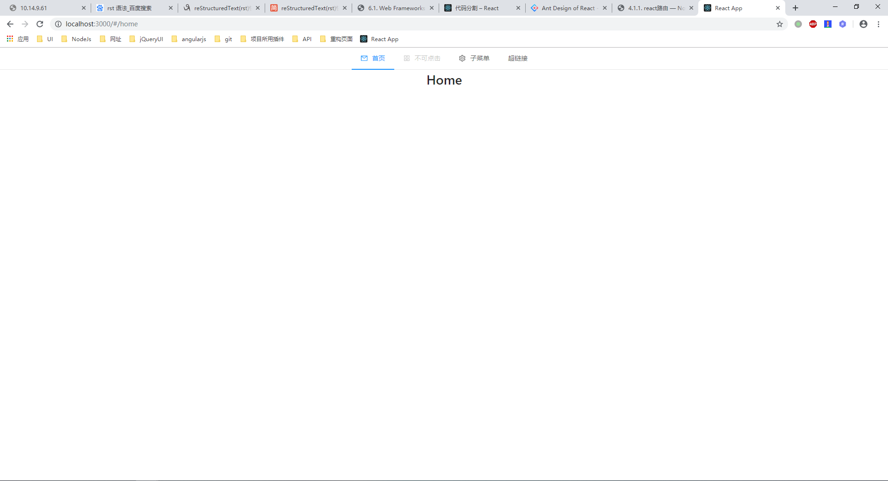
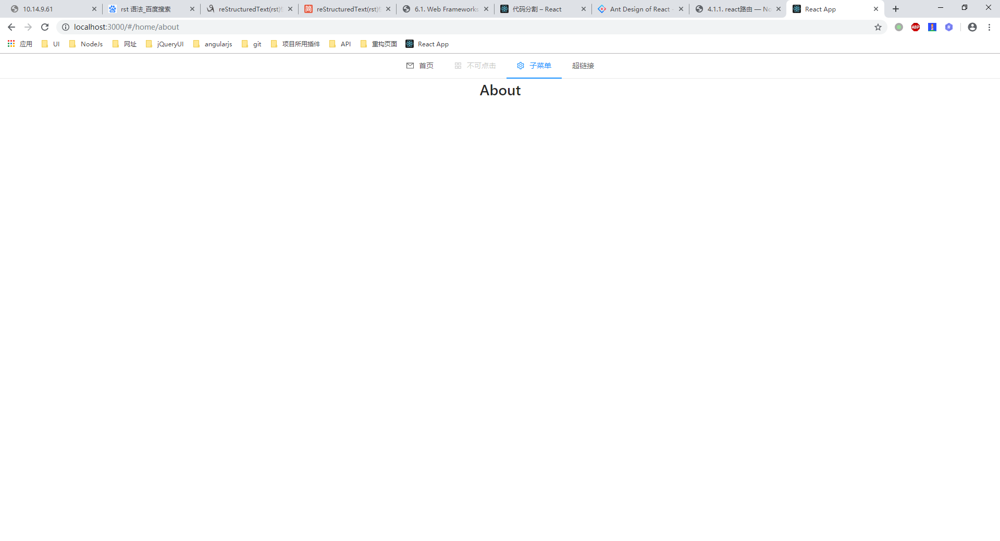
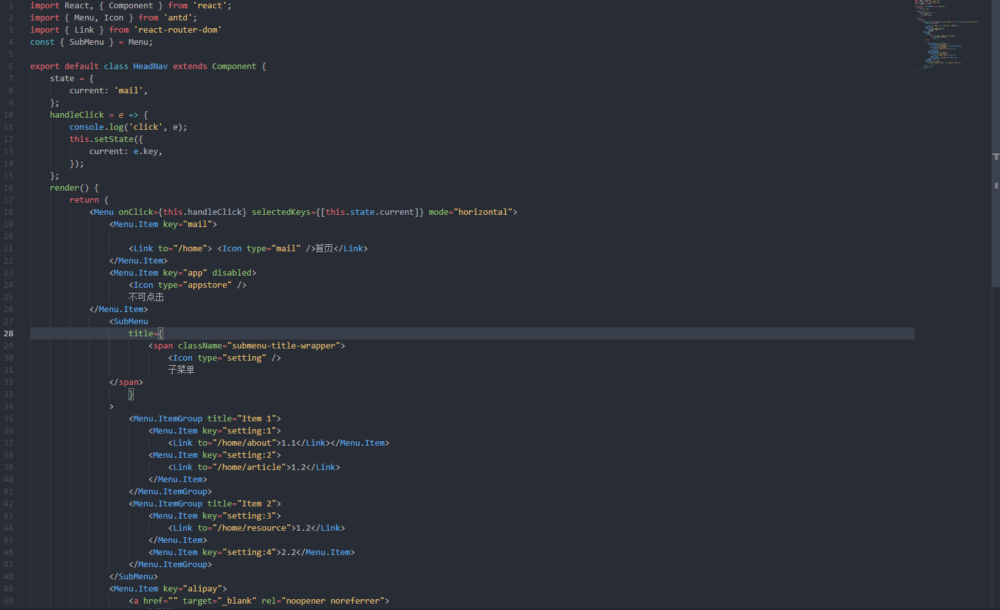

3.1. react路由¶
react路由主要用于当根据用户点击菜单栏中的选项显示不同的界面，切换方式根据改变地址栏中的后缀不同更改除header和footer之外的内容。
前端框架：React
UI：antUI
具体效果图如下：


使用react路由之前需要在项目环境中安装react-router-dom
具体操作步骤如下：
step01 项目中引入AntUI
$ npm install antd --save
在引入AntUI之后还需要进行一个步骤，否则会导致样式无法加载出来,在App.js中引入样式
import 'antd/dist/antd.css'
step02 新建一个页面做为项目的顶部导航栏

step03 在主页面中引入导航栏
import HeadNav from '../../common/HeadNav'
<div id="DefaultLayout">
<HeadNav />
</div>
step04 创建出对应的子页面
step05 在主页面中将各个子页面与相应的地址对应起来
<Route path={this.props.match.url + "/"} component={Home} exact />
<Route path={this.props.match.url + "/about"} component={About} />
<Route path={this.props.match.url + "/article"} component={Article} />
<Route path={this.props.match.url + "/resource"} component={Resource} />
子页面应该是从主页面跳转过去的，所以在地址栏中应当为127.0.0.1:8080/home/about，所以在path之后添加了this.props.match.url。
step06 在头部页面的各个子菜单的标签中添加<Link>并指明地址，在使用<Link>之前应当在头部引入
import { Link } from 'react-router-dom'